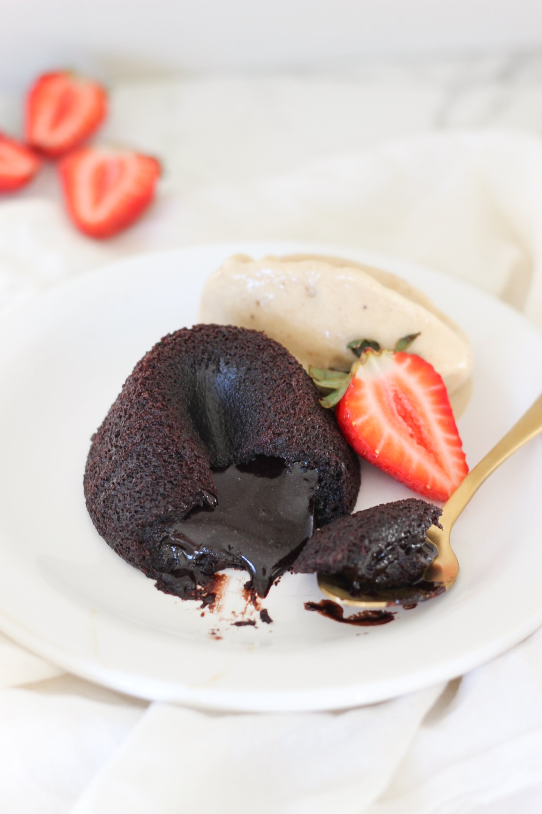

Volcan de chocolate

El volcán de chocolate es un postre irresistible que sorprende al cortar su suave exterior y descubrir un centro de chocolate caliente y fundido. Su combinación de texturas lo convierte en una opción perfecta para ocasiones especiales o para darse un gusto cuando tienes antojo de algo intensamente chocolatoso.